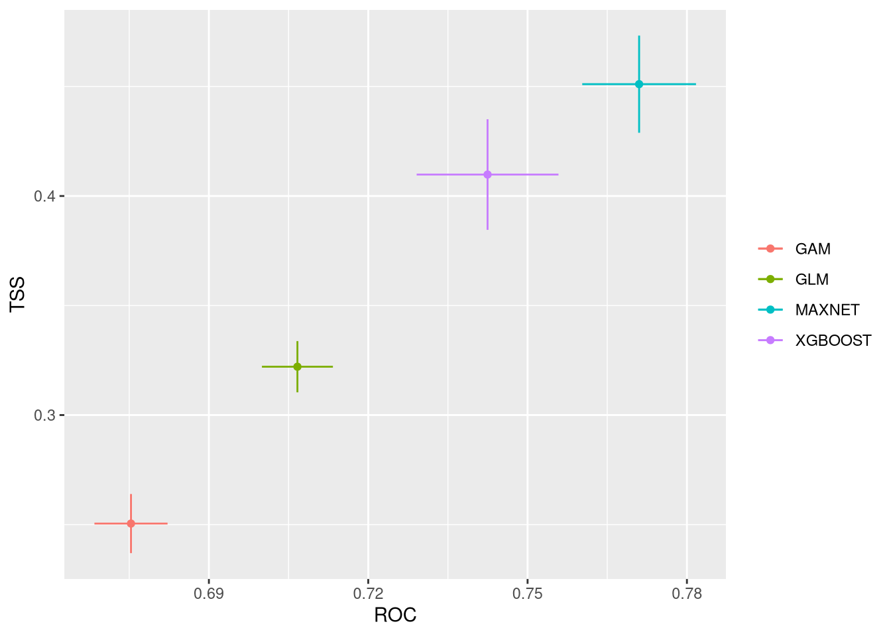
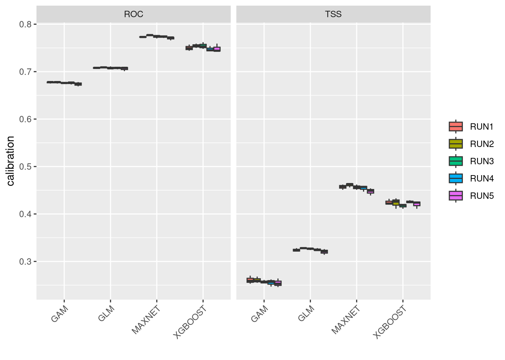
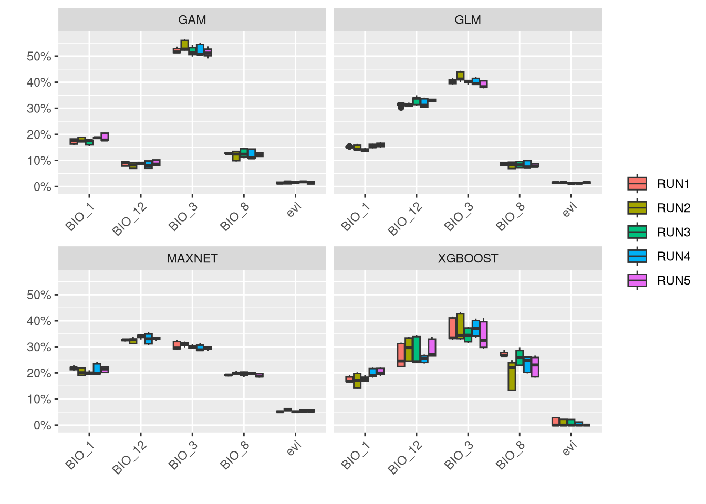
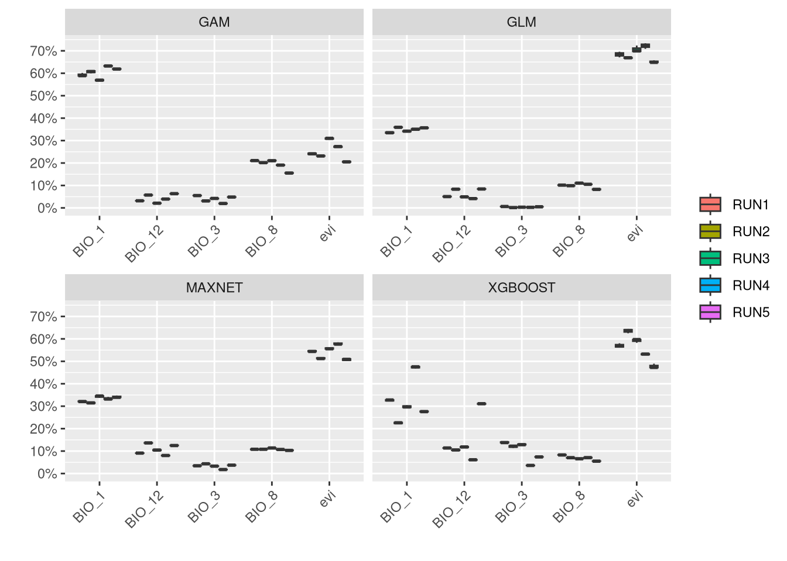
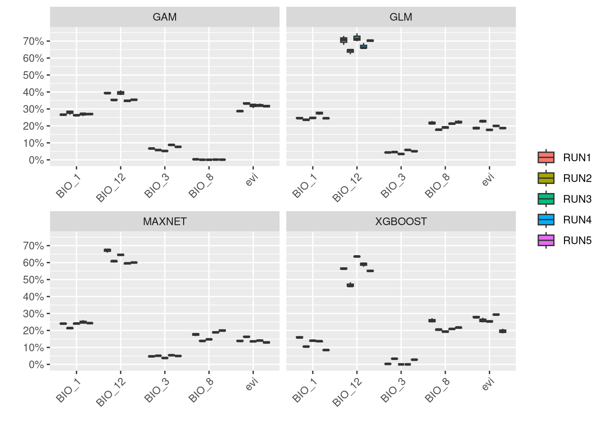

7 Chapter 6 - Model building
Until now, we have been preparing data for Ecological Niche Modelling (ENM). These included_
- Clean presence locations
- Aligned and selected environmental variables for training
- Cropped projection rasters for present and future climates
At this point, we are ready to produce the first models. We will be using a package named biomod2 that provides functionality for modeling, ensembling multiple models, and retrieving model projections.
Building a single model is straightforward. However, if we want to vary some initial conditions (resampling, pseudo-absence selection, etc.) and use multiple modeling algorithms (GLM, GAM, CART, Maxent, etc.), we need to produce a large number of models and predictions. The biomod2 library facilitates this process by internally tracking all model variants and providing us with a simpler interface to control crucial parameters of the modeling process that require our intervention.
The purpose of this chapter is to build an ENM with:
- 3 sets of pseudo-absences drawn randomly from the buffer area around presences
- 4 modeling algorithms including Generalised Linear Models (GLM), General Additive Models (GAM), Maximum Entropy (Maxnet), and eXtreme Gradient Boosting Training (XGBOOST)
- 5 replicates using K-Fold resampling strategy.
The combination results in \(3x4x5=60\) build models. Besides those, we will have to project models to present conditions and 6 future climate layers from a combination of ages and SSPs (covered in chapter 8).
“We need the terra and biomod2 packages. While terra provides GIS capabilities, biomod2 offers the tools to build models. If biomod2 is not available, it requires installation. Additionally, biomod2 depends on other libraries, including dismo, xgboost, maxnet, gam, and tidyterra. We don’t need to interact directly with these packages, but biomod2 requires them. We can install these packages either via the RStudio menu or by executing the following code:
install.packages("biomod2")
install.packages("dismo")
install.packages("xgboost")
install.packages("maxnet")
install.packages("gam")
install.packages("tidyterra")And we can open the need libraries:
Open the relevant data for modelling.
pres <- read.table("data/species/speciesPresence_v2.csv", sep="\t", header=TRUE)
vars <- rast("data/rasters/final_vars.tif")Recall that the presence table has data for the 3 species and that the selected variables are in a single raster file.
7.1 Model building
In this chapter, we will build models for three species. We’ll start with a detailed walkthrough for Vipera aspis, and then apply the same process to the other two species. All models will be saved in the models directory, which should be empty at the start. A folder for each species, organized by biomod2, will be created automatically.
The first step is to provide data into a formatting functions that will prepare the data in a way that biomod2 can understand and track parameters.
We need a response variable which is a vector of 1s with the same size as presence locations for the species. This is because we don’t have absences (zeros) and we are using a presence-only model strategy by creating pseudo-absences.
We also need a table of coordinates for each presence which is present in our presence data file.
Finally we need our explanatory variables or predictors that we prepared before.
# How many presences for Vaspis?
n_va <- sum(pres$species == "Vaspis")
# repeat 1 to the same length of presences available
resp_va <- rep(1, n_va)
# get the coordinates for Vaspis
coords_va <- pres[pres$species == "Vaspis", 2:3]In the formatting data, we also provide some other modeling parameters. We need to define the strategy for selecting pseudo-absences, which is based on a buffer around presences. We use the same buffer as before (Chapter 2), which is 110,000 km. We ask for three different sets of 10,000 pseudo-absences followinf the disk strategy (same as buffer), which will allow us to capture some variation in the initial conditions for each model.
The dir.name sets the folder where models are to be saved and the resp.name sets a name for the project and folder to be created inside the models folder.
vaData <- BIOMOD_FormatingData(resp.var = resp_va,
expl.var = vars,
resp.xy = coords_va,
resp.name = "Vaspis",
dir.name = "models",
PA.nb.rep = 3,
PA.nb.absences = 10000,
PA.strategy = "disk",
PA.dist.max = 110000)##
## -=-=-=-=-=-=-=-=-=-=-=-=-=-= Vaspis Data Formating -=-=-=-=-=-=-=-=-=-=-=-=-=-=
##
## ! No data has been set aside for modeling evaluation
## ! No data has been set aside for modeling evaluation
##
## Checking Pseudo-absence selection arguments...
##
## ! No data has been set aside for modeling evaluation
## > Disk pseudo absences selection
## > Pseudo absences are selected in explanatory variables|---------|---------|---------|---------|=========================================
## > random pseudo absences selection
## > Pseudo absences are selected in explanatory variables
##
## ! No data has been set aside for modeling evaluation
## ! No data has been set aside for modeling evaluation
## -=-=-=-=-=-=-=-=-=-=-=-=-=-=-=-=-=-= Done -=-=-=-=-=-=-=-=-=-=-=-=-=-=-=-=-=-=We have the data formatted, so we can proceed to the modeling step. Here, we need to define the model algorithms to run and the train/test strategy. This allows us to control overfitting by providing examples to train the model and a set of independent examples to test its predictive ability. We choose K-fold cross-validation for this purpose. In this case, we divide the dataset into five equal-sized folds and test four against one for each fold.
As models should be evaluated for performance, we choose two common techniques for this: TSS (True Skill Statistic) and ROC (Receiver Operating Characteristic)
There are many algorithms available for modelling. We are limiting to 4 different algorithms which are generally fast to train and still provide a good example of the ensemble modelling strategy. We choose:
- Generalized Linear Model (GLM): A general regression model using a binomial family of distributions (logistic regression)
- Generalized Additive Models (GAM): A regression-based approach where smoothing functions are applied to each predictor.
- Maximum Entropy (Maxnet): A machine learning method sharing some similarities with GAM and is an R version of the common MaxEnt approach.
- Extreme Gradient Boosting (XGBOOST): A machine learning method related to decision trees, known to be fast and perform well.
Each of these algorithms has specific parameters to tune. The biomod2 library offers different strategies for tuning them. We are choosing the ‘bigboss’ strategy, which consists of a list of the best parameters as defined by the package authors. This means that the authors tested several algorithms under different data and provided a list of options for each algorithm that generally performs well in most common situations.
Variable importance is a measure of how much each predictor influences each model. In the context of Ecological Niche Modeling (ENM), it detects the variable most determining the distribution of the species. This is done via permutations, set in var.import. We set this to 3, which is a low number of permutations, but since they take some time to run, we need to keep this number low for this example.
vaModel <- BIOMOD_Modeling(bm.format = vaData,
modeling.id = "EcoMod",
models = c("GAM", "GLM", "MAXNET", "XGBOOST"),
CV.strategy = "kfold",
CV.k = 5,
CV.do.full.models = FALSE,
OPT.strategy = "bigboss",
var.import = 3,
metric.eval = c("TSS", "ROC"))##
## -=-=-=-=-=-=-=-=-=-=-=-=-=-=-= BIOMOD.models.out -=-=-=-=-=-=-=-=-=-=-=-=-=-=-=
##
## Modeling folder : models
##
## Species modeled : Vaspis
##
## Modeling id : EcoMod
##
## Considered variables : evi BIO_8 BIO_3 BIO_12 BIO_1
##
##
## Computed Models : Vaspis_PA1_RUN1_GAM Vaspis_PA1_RUN1_GLM
## Vaspis_PA1_RUN1_MAXNET Vaspis_PA1_RUN1_XGBOOST Vaspis_PA1_RUN2_GAM
## Vaspis_PA1_RUN2_GLM Vaspis_PA1_RUN2_MAXNET Vaspis_PA1_RUN2_XGBOOST
## Vaspis_PA1_RUN3_GAM Vaspis_PA1_RUN3_GLM Vaspis_PA1_RUN3_MAXNET
## Vaspis_PA1_RUN3_XGBOOST Vaspis_PA1_RUN4_GAM Vaspis_PA1_RUN4_GLM
## Vaspis_PA1_RUN4_MAXNET Vaspis_PA1_RUN4_XGBOOST Vaspis_PA1_RUN5_GAM
## Vaspis_PA1_RUN5_GLM Vaspis_PA1_RUN5_MAXNET Vaspis_PA1_RUN5_XGBOOST
## Vaspis_PA2_RUN1_GAM Vaspis_PA2_RUN1_GLM Vaspis_PA2_RUN1_MAXNET
## Vaspis_PA2_RUN1_XGBOOST Vaspis_PA2_RUN2_GAM Vaspis_PA2_RUN2_GLM
## Vaspis_PA2_RUN2_MAXNET Vaspis_PA2_RUN2_XGBOOST Vaspis_PA2_RUN3_GAM
## Vaspis_PA2_RUN3_GLM Vaspis_PA2_RUN3_MAXNET Vaspis_PA2_RUN3_XGBOOST
## Vaspis_PA2_RUN4_GAM Vaspis_PA2_RUN4_GLM Vaspis_PA2_RUN4_MAXNET
## Vaspis_PA2_RUN4_XGBOOST Vaspis_PA2_RUN5_GAM Vaspis_PA2_RUN5_GLM
## Vaspis_PA2_RUN5_MAXNET Vaspis_PA2_RUN5_XGBOOST Vaspis_PA3_RUN1_GAM
## Vaspis_PA3_RUN1_GLM Vaspis_PA3_RUN1_MAXNET Vaspis_PA3_RUN1_XGBOOST
## Vaspis_PA3_RUN2_GAM Vaspis_PA3_RUN2_GLM Vaspis_PA3_RUN2_MAXNET
## Vaspis_PA3_RUN2_XGBOOST Vaspis_PA3_RUN3_GAM Vaspis_PA3_RUN3_GLM
## Vaspis_PA3_RUN3_MAXNET Vaspis_PA3_RUN3_XGBOOST Vaspis_PA3_RUN4_GAM
## Vaspis_PA3_RUN4_GLM Vaspis_PA3_RUN4_MAXNET Vaspis_PA3_RUN4_XGBOOST
## Vaspis_PA3_RUN5_GAM Vaspis_PA3_RUN5_GLM Vaspis_PA3_RUN5_MAXNET
## Vaspis_PA3_RUN5_XGBOOST
##
##
## Failed Models : none
##
## -=-=-=-=-=-=-=-=-=-=-=-=-=-=-=-=-=-=-=-=-=-=-=-=-=-=-=-=-=-=-=-=-=-=-=-=-=-=-=-=This command will take some time to run as it needs to build all the combinations of models we specified. It displays general information on the process, allowing us to check if any models are failing. If models do fail, we may need to investigate the reasons and adjust some parameters. If everything runs successfully, we can plot the results to evaluate the models’ performance.

NOTE: We are assigning the results of the functions to a plt object that gets replaced with each plot. Since the functions used to plot also return the data used to build the plots, assigning the results to an object prevents displaying the entire dataset in the console. Although we are not using this data here, you can check the contents of plt at any time!
These plots show the model performance for the calibration and validation sets. Remember that we used the K-fold strategy with K=5K=5 folds. This means that all five combinations of four folds against one fold were used for calibration (training) and validation, respectively.
The plots show the TSS (True Skill Statistic) and the ROC/AUC (Receiver Operating Characteristic/Area Under Curve) values. The closer these values are to 1, the better the model performance. Of course, different algorithms, different sets of pseudo-absences, and different sets of training data (folds) will provide slight variations in performance. Generally, the models we built are acceptable, as indicated by ROC/AUC values higher than 0.65 and TSS greater than 0.25. In general, XGBoost and Maxnet, both machine learning methods, outperform the simpler regression-based methods.
Both calibration and validation show acceptable performance, indicating good model fitting, predictive ability, and a low level of overfitting.
We can compare together the different runs and algorithms:

An important step in the modeling results analysis is to understand how much each predictor variable is contributing to each model.

In general, it is shown that EVI is a low contributor for this species, while climate variables are generally more associated with the distribution of V. aspis. Although precipitation (BIO_12) is associated with high presence for Maxnet and GLM, a temperature variable (BIO_3) is generally important to all models.
We can plot the response curves for each variable, which show how the predictions of the model vary with the range of values for each variable. This involves using the models to predict across the entire range of values for one variable while keeping the other variables fixed at a constant value. In this example, the other variables are fixed at their median value.

There are many combinations of models, runs, and pseudo-absence sets, making these plots complex to interpret. After ensembling (chapter 7), we will construct simpler response curves. However, it is important to note that, in general, the responses show similar patterns. We should give more importance to the responses of the variables that are more significant for each algorithm. For instance, it is not useful tssp in sspso focus on EVI for Maxnet and GLM algorithms.
The models were built in the environmental space. The environmental values for the four predictors were extracted from the locations (presence and pseudo-absences) by biomod2. The models were then built, tested, and evaluated.
At this point, we have a large combination of models that will be ensembled into a single one in the next chapter. However, we can still project the model to the entire study area. This will create a raster file that we can open in any GIS, which is useful for checking the spatial prediction patterns for each individual model and perform visual checking. The projections we will use to answer our initial question will be made in chapter 8, only after ensembling the models.
vaProj <- BIOMOD_Projection(bm.mod = vaModel,
proj.name = 'Present',
new.env = vars,
models.chosen = 'all')We can directly plot all models, but it might take a long time to finish since there are many models (PA x Runs x Algorithm = 3 x 5 x 4 = 60 models) to show. However, all models are built and saved into a single file, models/Vaspis/proj_Present/proj_Present_Vaspis.tif, which can be inspected in any GIS.
7.2 Repeat for the other two species
7.2.1 Vipera latastei
The code is basically the same, just changing the input data and directory names for Vipera latastei.
n_vl <- sum(pres$species == "Vlatastei")
coords_vl <- pres[pres$species == "Vlatastei", 2:3]
vlData <- BIOMOD_FormatingData(resp.var = rep(1, n_vl),
expl.var = vars,
resp.xy = coords_vl,
resp.name = "Vlatastei",
dir.name = "models",
PA.nb.rep = 3,
PA.nb.absences = 10000,
PA.strategy = "disk",
PA.dist.max = 110000)
vlModel <- BIOMOD_Modeling(bm.format = vlData,
modeling.id = "EcoMod",
models = c("GAM", "GLM", "MAXNET", "XGBOOST"),
CV.strategy = "kfold",
CV.k = 5,
CV.do.full.models = FALSE,
OPT.strategy = "bigboss",
var.import = 3,
metric.eval = c("TSS", "ROC"))
# Plotting examples
plt <- bm_PlotEvalMean(vlModel, dataset="calibration")

7.2.2 Vipera seoanei
The input data is now for Vipera seoanei.
n_vs <- sum(pres$species == "Vseoanei")
coords_vs <- pres[pres$species == "Vseoanei", 2:3]
vsData <- BIOMOD_FormatingData(resp.var = rep(1, n_vs),
expl.var = vars,
resp.xy = coords_vs,
resp.name = "Vseoanei",
dir.name = "models",
PA.nb.rep = 3,
PA.nb.absences = 10000,
PA.strategy = "disk",
PA.dist.max = 110000)
vsModel <- BIOMOD_Modeling(bm.format = vsData,
modeling.id = "EcoMod",
models = c("GAM", "GLM", "MAXNET", "XGBOOST"),
CV.strategy = "kfold",
CV.k = 5,
CV.do.full.models = FALSE,
OPT.strategy = "bigboss",
var.import = 3,
metric.eval = c("TSS", "ROC"))
# Plotting examples
plt <- bm_PlotEvalMean(vsModel, dataset="calibration")
7.3 Final considerations for the modelling
Now, all models are available in the models directory. We will access them in the next chapters for ensembling, projecting, and plotting.
By examining the different plots for each species, one can observe that different variables have varying importance for predicting each species. This is a significant finding, as it allows us to describe the niche of each species in terms of environmental preferences. Some species’ models will be more dependent on climate variables, making their distributions more susceptible to climate change. Species that rely more on static variables (NDVI, in this example) will have distributions in projections for other time periods that are less prone to change.